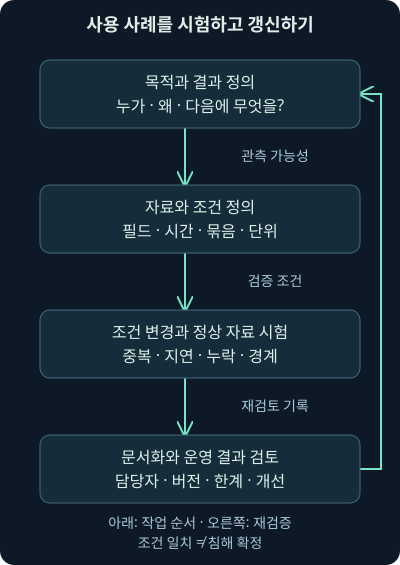
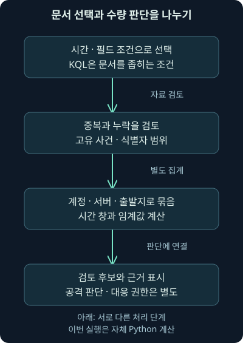
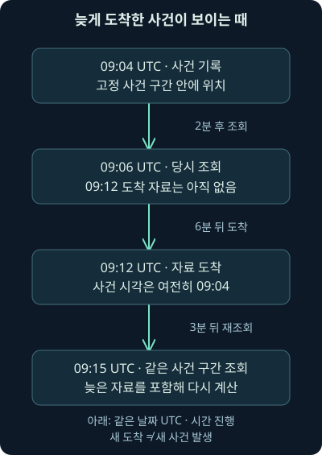

탐지 사용 사례와 KQL 검색 검증
첫째 날16강. 탐지 사용 사례를 문서화하고 KQL의 조건·시간·자료형을 이해하며, 자체 로그로 중복·지연·집계와 판단의 한계를 검증합니다.
1. “실패가 많으면 알려 주세요”를 실행 가능한 약속으로
가상 관제팀에 “로그인 실패가 많으면 알려 주세요”라는 요청이 왔습니다. 같은 계정의 실패를 셀까요, 같은 출발 주소를 셀까요? 5분 동안 세 번인가요, 하루 동안 백 번인가요? 알림을 받은 사람은 계정을 잠글까요, 먼저 사용자와 기록을 확인할까요? 이 질문이 비어 있으면 같은 규칙 이름을 보고도 서로 다른 일을 하게 됩니다.
15강에서는 SIEM으로 들어오는 자료의 품질과 흐름을 배웠습니다. 이번 16강은 탐지 사용 사례의 목적·자료·조건·검토 절차를 문서화하고, KQL 검색과 집계의 차이를 이해하는 강의입니다. 마지막에는 자체 가상 로그를 로컬 Python으로 계산합니다. 자동화의 역할과 사람의 판단은 다음 17강에서 이어갑니다.
KQL 문법은 공식 문서와 대조했지만 Kibana·Elasticsearch·실제 SIEM 규칙으로 실행하지 않았습니다. 이 강의에서 실제 실행한 것은 별도로 표시한 자체 Python 계산입니다. 원본 VM·워크북·실제 인증 로그나 패킷을 분석한 결과가 아닙니다.
2. 사용 사례는 조건식보다 큰 작업 약속입니다
사용 사례, use case는 “무엇을 왜 찾아서 어떤 결과를 누구에게 주고, 다음에 무엇을 할 것인가”를 정리한 설명입니다. 경보뿐 아니라 정기 보고서·대시보드·조사 검색도 결과가 될 수 있습니다. 규칙 한 줄은 그 약속의 일부입니다.
생활 속 화재 경보를 생각해 보세요. 감지기의 기준값뿐 아니라 설치 장소·시험 방법·연락 대상·대피 절차가 있어야 실제로 도움이 됩니다. 보안에서도 조건에 일치했다는 신호와 조사·판단·대응을 연결해야 합니다. 다만 로그는 실제 현상을 불완전하게 기록할 수 있으므로 조건 통과를 피해 확정으로 바꾸지 않습니다.
이번 자체 사용 사례는 “같은 인증 서버·계정 영역·계정·출발 주소에서 고정된 5분 구간 안에 고유 인증 실패가 세 건 이상이면 검토 후보를 만든다”입니다. 세 건이라는 값은 교육용 가정이며 보편적인 운영 권고나 공격 판정 기준이 아닙니다.
3. 목적·행동·자료를 먼저 맞춥니다
보호 목적은 계정의 비인가 사용 가능성을 조사할 출발점을 만드는 것입니다. 직접 찾는 조건은 반복 실패입니다. 실패를 찾는 조건과 비밀번호 추측·계정 탈취·침해 성공이라는 결론은 구분합니다. 오타·오래된 서비스 자격 증명·승인된 시험도 같은 조건에 걸릴 수 있습니다.
주 자료는 인증 제공자나 서버의 인증 기록입니다. 필요한 필드는 시각·결과·계정 식별 범위·출발 주소·기록 출처와 식별자입니다. 보조 자료는 후속 성공·세션·권한 변경·단말 행동·서버 접근 등입니다. “검색에 필요한 필드가 실제 출처에 존재하고 올바르게 정규화되는가?”를 먼저 확인해야 합니다.
출발 주소가 같아도 NAT나 프록시 뒤에 여러 사용자가 있을 수 있습니다. 반대로 하나의 계정이 여러 출발 주소에서 사용될 수도 있습니다. 묶는 기준이 바뀌면 찾는 현상도 달라지므로, 기준을 소리 내어 설명할 수 있을 정도로 구체화하세요.
4. 다른 사용 사례에도 같은 질문을 적용합니다
사용자의 업로드량 급증을 찾으려면 어느 방향의 바이트인지, 재전송·백업·승인된 대용량 작업이 포함되는지 확인합니다. 다운로드를 조사하려면 전송·파일 저장·실행을 나눠야 합니다. 파일 확장자나 포트만으로 악성 파일 다운로드가 성공했다고 결론 내릴 수 없습니다.
관리자 그룹에 계정이 추가되는 조건은 승인된 변경과 비교해야 합니다. 누가 어느 대상에 어떤 권한을 부여했고 실제 적용됐는지 확인합니다. 피싱 사이트에 접속한 기록은 자격 증명 제출의 증거와 다릅니다. 암호화·수집 위치 때문에 입력 내용을 볼 수 없는 상황에서는 실제 인증·사용자·단말 기록과 대조할 질문을 남깁니다.
이처럼 행동별로 필요한 자료와 후속 검토가 다릅니다. 경보 제목을 그럴듯하게 붙이는 대신, 어떤 관측이 어떤 가설을 지지하고 무엇을 아직 알 수 없는지 문서에 적습니다.
5. 다음 담당자가 이어갈 수 있는 문서를 만듭니다
문서에는 이름·설명·해결하려는 문제·업무 목표·필수 조건·주/보조 자료·분석 논리·참고 근거·조사 순서·정상 가능성 검토·분류와 변경 이력을 담습니다. 담당자·규칙 버전·시험 자료·성공/실패 결과·재검토 시점도 있으면 운영을 이어가기 쉽습니다.
| 자체 사용 사례의 항목 | 기록할 내용 | 필요한 이유 |
|---|---|---|
| 시간과 계산 단위 | 고정 구간, 사건 시각, 고유 사건 수 | 반복 수신·도착 지연의 영향 구분 |
| 묶는 기준 | 서버·계정 영역·이름·출발 주소 | 다른 계정·출처를 잘못 합치지 않음 |
| 정상 가능성 | 오타·서비스 오류·승인된 시험 | 조건 일치와 공격 판단 분리 |
| 검토와 담당자 | 원기록·후속 행동·필요한 연락 경로 | 경보 후 실제 조사를 연결 |
표는 문서의 일부만 비교한 것입니다. 아래 실습의 use-case.json은 이 항목들을 담은 자체 예제입니다. 실제 조직의 승인이나 규정 준수 판정 문서가 아니며, 해당 조직의 자료·권한·업무 조건을 대신하지 않습니다.
6. 분류 체계와 문서 저장 방식은 목적을 돕습니다
MITRE ATT&CK는 관측된 공격자의 전술·기법을 정리한 지식 체계입니다. VERIS는 보안 사건을 구조적으로 기록·공유하기 위한 공통 어휘입니다. 행동 분류나 사건 분류와 연결하면 여러 사용 사례가 무엇을 관측하는지 비교하기 쉽습니다. 확인일 2026-11-05의 ATT&CK 공식 안내와 VERIS 공식 안내를 참고했습니다. 공식 페이지에 남은 오래된 버전 문구를 현재 스키마 버전으로 재선언하지 않습니다.
과거 자료의 Kill Chain 같은 단계 분류 이름은 분석 범위를 정리하는 참고로 이해할 수 있습니다. 이번 확인에서는 제작사 페이지가403으로 열리지 않아 현행 상세 모델을 검증했다고 설명하지 않습니다. 어떤 체계를 쓰든 이름을 붙인 것만으로 탐지 범위가 증명되지는 않습니다. 실제 입력·분석 조건·검증 결과와 연결해야 합니다.
문서는 위키·이슈 시스템·표·파일·데이터베이스 등 팀이 관리할 수 있는 곳에 둘 수 있습니다. 저장 도구보다 표준 항목·검토 책임·변경 추적·검색 가능성이 중요합니다. 업무·감사 요구와의 연결도 근거를 남기되, 태그 하나로 법적 준수를 확정하지 않습니다. 행위자 이름은 증거가 충분할 때만 별도 판단으로 기록합니다.
7. 정상 자료와 조건 변경을 함께 시험합니다
원하는 조건이 들어 있는 자체 자료에서 후보가 나오는지 확인하고, 조건이 없는 자료에서는 나오지 않는지도 봅니다. 실제 과거 로그를 이용한 오탐 검토는 수집 범위·표본 선택·정답 근거를 함께 기록해야 합니다. 표본에서 오탐이 없었다는 결과가 앞으로 모든 상황에서 오탐이 없다는 보장은 아닙니다.

그림의 되돌림이 중요합니다. 파서·시간 필드·시스템 설정·자료량·규칙이 바뀌면 이전의 성공 시험도 다시 확인할 수 있어야 합니다. 공격·방어 담당자가 함께 조건을 시험하는 협업 평가나 자동 검증 도구도 같은 목적을 돕지만, 이번에는 실제 공격 재현·제품 검증을 수행하지 않았습니다.
8. 검색 전에 대상과 시간을 확인합니다
Kibana의 데이터 뷰, data view는 어느 Elasticsearch 인덱스·데이터 스트림·별칭을 조회할지 정하는 구성입니다. 과거의 인덱스 패턴이라는 이름이 현재 문서에서는 데이터 뷰로 바뀌었습니다. 저장소의 인덱스 그 자체와 화면의 조회 구성을 같은 것으로 보지 마세요. 공식 데이터 뷰 안내, 확인일 2026-11-05를 대조했습니다.
*처럼 넓은 대상을 선택해도 수집하지 않은 자료나 권한 밖 자료까지 생기지는 않습니다. 관계없는 출처까지 섞이면 동일 필드의 의미·자료형이 다를 수도 있습니다. 필요한 출처와 시간 필드를 먼저 정한 뒤 조건을 넓히는 편이 결과를 설명하기 쉽습니다.
Discover는 문서·필드·분포를 탐색하는 화면입니다. 자료 선택, 시간 범위, 검색 조건, 결과의 개별 문서를 연결해서 읽어야 합니다. 화면의 위치와 기능은 버전·솔루션에 따라 다를 수 있으며, 여기서는 버튼 클릭이나 설치본 화면 검증을 하지 않았습니다. 공식 Discover 안내, 확인일 2026-11-05를 참고했습니다.
9. 차트에서 개별 문서로 내려가 봅니다
시간별 막대의 높이는 해당 조건에서 집계된 문서 수 등을 보여 줍니다. 계정 수·피해 단말 수·공격 수와 자동으로 같지 않습니다. 막대를 좁혀 보더라도 실제 문서의 시각·필드·원문과 어떤 집계인지 확인해야 합니다.
필드 목록에서 값의 분포를 보면 파싱 오류나 예상치 못한 값이 있는지 발견할 수 있습니다. 다만 화면에 나온 상위 값 몇 개가 전체의 모든 값은 아닙니다. 빈 항목·드문 값·표본/표시 제한과 자료형을 함께 확인하세요.
필요한 열을 골라 시각·계정·출발지·결과·출처·식별자를 나란히 보면 비교가 편해집니다. 요약 열만 보고 판단하지 말고 중요한 기록은 펼쳐 원문과 맥락을 확인합니다. 이번 자체 실습의 JSON 문서는 화면 대신 파일에서 이 비교를 할 수 있게 만든 것입니다.
10. KQL은 문서를 고르는 조건 언어입니다
KQL, Kibana Query Language는 필드와 값·범위·결합 조건으로 문서를 좁히는 검색 언어입니다. 여기의 KQL은 다른 제품에서 같은 약어로 부르는 언어와 구별하세요. KQL 자체는 집계·변환·정렬을 수행하는 언어가 아닙니다. 공식 KQL 개요, 확인일 2026-11-05를 기준으로 설명합니다.
event.category: authentication AND event.outcome: failure콜론 : 앞은 필드, 뒤는 찾을 값입니다. AND는 두 조건을 모두 만족하라는 뜻입니다. 첫 조건은 인증 관련 문서, 둘째는 실패로 정규화된 결과를 선택합니다. 실제 필드 정의와 값이 그 의미를 보존한다는 전제가 필요하며 이 한 줄에 “공격”이라는 판정이 들어 있지는 않습니다.
필드를 쓰지 않고 단어만 입력하면 기본 검색 대상 필드에 따라 찾습니다. 특정 사용자나 결과를 조사할 때는 의미를 확인한 필드를 명시하는 편이 해석하기 쉽습니다. 이 강의의 KQL은 문법·의도 설명이며 실제 제품의 실행 결과 수를 제시하지 않습니다.
11. OR와 괄호로 질문을 명확하게 합니다
event.category: authentication AND (event.outcome: failure OR event.outcome: unknown)OR는 둘 중 하나의 조건을 만족하면 선택합니다. 괄호는 실패 또는 결과 미확인이라는 묶음을 인증 조건과 연결합니다. 의도한 묶음을 괄호로 표현하면 연산 우선순위를 잘못 읽는 일을 줄일 수 있습니다. 미확인 결과를 실패로 바꾸는 것은 아니며 두 부류를 함께 살펴보는 조건입니다.
user.name: sam AND source.ip: 198.51.100.20두 번째 식은 지정 계정 이름과 출발 주소를 동시에 찾습니다. 198.51.100.20은 문서용 주소입니다. 이름과 주소가 일치해도 동일 사람·동일 장비·동일 사건이 자동 증명되지 않습니다. 계정 영역·서버·시간·NAT·프록시 역할을 추가로 확인해야 합니다.
12. 존재·부정·와일드카드의 의미를 구별합니다
user.name: *
NOT user.name: *
host.name: auth*첫 식의 *는 해당 필드에 색인된 값이 존재하는 문서를 고르는 용도입니다. 빈 문자열도 색인 값으로 존재할 수 있으므로 “업무상 유효한 계정 이름” 검증과 다릅니다. 두 번째 NOT은 그 조건을 부정해 값이 없는 쪽을 살펴봅니다. 없는 것을 “모든 사용자”라는 하나의 계정으로 합치면 안 됩니다.
세 번째 식의 *는 이름 패턴을 맞추는 와일드카드입니다. KQL의 일반 패턴 검색을 임의 정규 표현식과 같게 보지 마세요. 과거 화면 설명에 정규 표현식이 언급되어도 KQL과 Lucene 등 다른 검색 언어의 기능을 섞으면 안 됩니다. 공식 문법 참조, 확인일 2026-11-05를 대조했습니다.
13. 범위·문자열·자료형에 맞는 질문을 씁니다
destination.port > 1024 AND destination.port <= 49151
http.response.status_code: (200 OR 404)
message: "authentication failed"첫 식의 >는 초과, <=는 이하이므로 1025~49151을 선택하려는 조건입니다. 숫자 필드라는 전제가 필요합니다. 범위를 고른 이유는 조사 대상을 좁히려는 것이며 이 포트 범위가 공격이라는 뜻은 아닙니다. 원출처의 destination_port라는 이름을 공통 스키마의 destination.port로 자동 추정해서도 안 됩니다.
두 번째 식은 HTTP, 웹 요청·응답을 주고받는 프로토콜의 응답 상태 코드 중200 또는404를 고르는 예입니다. 응답 코드는 애플리케이션의 모든 업무 성공·실패나 공격 성공을 대신하지 않습니다. 세 번째의 따옴표는 text 필드에서 구문 검색을 표현할 수 있지만 전체 원문과 바이트 단위 일치를 보장하는 기호가 아닙니다. 분석기·매핑·실제 필드를 확인하세요.
이 예제들은 해당 필드가 있는 자료를 전제로 합니다. 아래 인증 실습에는 목적지 포트·HTTP 응답·message 필드를 넣지 않았으므로 그 파일에 세 조건의 제품 결과가 나온다고 주장하지 않습니다. 문법이 맞는 질문과 자료에 답할 항목이 있는지는 별개의 조건입니다.
14. 시간 조건은 화면의 시간 필터와 함께 적용됩니다
@timestamp >= "2026-11-05T09:00:00Z" AND @timestamp < "2026-11-05T09:05:00Z">=는 시작 포함, <는 끝 제외입니다. UTC를 나타내는 Z를 넣어 어느 시간대의 값인지 드러냈습니다. 이 조건은09:00부터09:05 직전까지라는 고정 구간을 표현하려는 예이며, 정확히09:05인 기록은 제외합니다. 인접 구간의 경계에서 중복 집계를 줄이려는 자체 기준입니다.
화면의 전역 시간 필터가 다른 구간이면 이 KQL만으로 그 제한을 우회하지 못합니다. 데이터 뷰의 선택 시간 필드·화면 표시 시간대·절대/상대 범위·추가 필터를 함께 확인하세요. “최근15분” 화면에서 과거 또는 미래의 가상 시간을 검색하면 문법이 맞아도 결과가 없을 수 있습니다. 공식 필터 안내, 확인일 2026-11-05를 참고했습니다.
15강의 사건 시각과 도착 시각 차이도 기억하세요. 사건 시각으로 조회해도 아직 도착하지 않은 자료는 나오지 않습니다. 도착 시각으로 바꾸면 같은 범위가 다른 질문이 됩니다. 규칙의 실행 주기·추가 조회 구간·중복 알림 처리까지 시험하지 않고 실시간 탐지가 검증됐다고 말할 수 없습니다.
15. 필터 일치와 세 건 이상 집계는 다릅니다
인증 실패 조건으로 문서를 골랐다고 “같은 계정에서5분 동안세 건”을 완성한 것은 아닙니다. 묶는 기준과 고유 사건의 정의, 시간 창, 수량 조건이 추가로 필요합니다. KQL의 AND를 여러 번 쓴다고 서로 다른 문서의 발생 횟수가 집계되지 않습니다.

그림에서는 시간·필드로 선택한 뒤 중복·누락을 검토하고, 식별 범위로 묶어 수량을 계산합니다. 실제 Elastic에서는 규칙 유형이나 별도 집계·분석 언어 등을 선택해야 합니다. 이번에는 제품 규칙을 만들지 않고 같은 문제를 이해하기 위한 자체 Python 계산만 실행했습니다.
16. 자체 로그 아홉 줄의 조건을 읽습니다
실습 자료는 모두 가상입니다. logs.jsonl, review_logs.py, use-case.json, README.txt를 같은 폴더에 저장하세요. JSONL은 한 줄마다 JSON 문서 하나를 두는 형식입니다. 전체 ECS 스키마나 실제 제품 가져오기를 검증한 파일은 아닙니다.
| 행 | 자체 설정의 핵심 | 계산에서 살펴볼 점 |
|---|---|---|
| R1·R2·R4 | auth01·EXAMPLE·sam·같은 출발지 실패 | L1·L2·L3의 고유 실패3건 |
| R3 | L2를 다시 수신 | 새 실패로 중복 계산하지 않음 |
| R5 | 정확히09:05의 성공 | 끝 제외 구간 밖, 별도 후속 조사 자료 |
| R6·R7 | 다른 서버 또는 다른 계정 | 주 묶음에 합치지 않음 |
| R8 | 계정 정보 없음 | 정상으로 채우거나 다른 계정과 합치지 않음 |
| R9 | 09:06 실패 | 기본 시간 구간 밖 |
R4의 사건 시각은09:04인데 도착 시각은09:12입니다. 다른 입력은 짧은 지연으로 도착합니다. 중복·지연·계정 누락을 일부러 넣어 같은 파일에서도 질문 조건에 따라 결과가 달라지는 것을 보려는 실험입니다. 실제 공격·사용자 행동을 재현한 자료가 아닙니다.
17. 기본 계산을 실행하고 결과의 단위를 읽습니다
python review_logs.py logs.jsonlpython은 실행기, review_logs.py는 프로그램, logs.jsonl은 읽을 자료입니다. 작성 시 Python 3.12.14로 실행했습니다. 기본 설정은09:00 포함~09:05 제외의 사건 시각 구간,09:15까지 도착한 자료, 같은 서버·계정 영역·계정·출발 주소의 고유 실패3건 이상입니다.
실제 자체 실행 결과는 전체9줄, 사용 가능9줄, 시간 구간 안7줄, 중복1줄, 계정 식별 정보 부족1건, 최종 선택5건·묶음3개였습니다. 검토 후보는 auth01·EXAMPLE·sam·198.51.100.20 묶음 하나이며 고유 사건 L1·L2·L3 세 건입니다. 9줄이 모두 공격9건이라는 뜻이 아닙니다.
프로그램은 결과를 화면에 JSON으로 출력하고 입력을 수정하지 않습니다. 종료 코드0은 계산 성공,2는 잘못된 입력·조건입니다. 후보가0개여도 계산 자체가 성공하면0입니다. 종료 코드를 위협 존재·부재와 혼동하지 마세요.
18. 중복과 식별자 충돌을 검사합니다
프로그램은 이 가상 자료에서 event.dataset, host.name, event.id의 묶음을 같은 사건의 식별 범위로 가정합니다. 같은 번호만 비교하면 다른 서버의 사건이 사라질 수 있어 범위를 함께 둔 것입니다. 이 가정은 모든 실제 출처에서 자동으로 성립하지 않습니다.
같은 식별 범위로 들어왔는데 핵심 내용이 다르면 조용히 한쪽을 버리지 않고 오류로 멈춥니다. 다시 수신한 R3의 도착 시각은 다를 수 있으므로 사건 내용과 도착 메타데이터를 나눠 비교합니다. 작성 시 내용 충돌 사본을 넣어 실제 오류 코드2를 확인했습니다.
자료형도 확인합니다. 시간대 없는 시각·깨진 JSON·필수 항목 누락을 정상0건으로 처리하지 않습니다. 다만 이 검사기는 교육용 일부 조건만 확인합니다. 출처가 실제 사건을 정확히 기록했는지, 식별자가 현실에서 유일한지까지 검증하는 증거 도구는 아닙니다.
19. 아직 도착하지 않은 기록을 넣어 비교합니다
python review_logs.py logs.jsonl --available-by 2026-11-05T09:06:00Z
python review_logs.py logs.jsonl --time-field ingest첫 명령의 --available-by는 어느 시각까지 도착한 자료를 사용할지 정하는 자체 옵션입니다.09:06까지로 제한하면09:12에 도착하는 L3는 아직 사용할 수 없습니다. 실제 계산에서 주 묶음은 두 건이 되어 후보가0개였습니다. 원기록에 실패가 없었다는 뜻이 아니라 그때는 아직 보이지 않는다는 뜻입니다.
둘째 명령의 --time-field ingest는 같은09:00~09:05 구간을 도착 시각으로 적용합니다. L3는09:12 도착이므로 범위 밖입니다. 이것도 후보0개였습니다. 두 명령의 이유는 다릅니다. 하나는 당시 가용 자료, 다른 하나는 비교하는 시각 필드가 바뀐 것입니다.

그림의09:04와09:12는 서로 다른 사건이 아닙니다. 사건 시각 조회의 재실행·추가 조회 구간과 알림 중복 처리를 실제 운영 규칙에서 검증해야 합니다. 이번 프로그램은 한 고정 구간의 계산이며 스케줄러·이동 시간 창·실시간 재처리를 구현하지 않았습니다.
20. 임계값과 경계를 바꾸어 봅니다
python review_logs.py logs.jsonl --threshold 4--threshold는 후보로 고를 최소 고유 실패 수입니다. 네 건으로 올리면 기본 자료의 주 묶음 세 건은 부족해 후보가0개가 됩니다. 신호를 줄였다는 사실만으로 더 정확한 규칙이 됐다고 판단하지 않습니다. 놓치는 조건과 업무 목적을 함께 평가해야 합니다.
작성 시 끝을09:06으로 바꾼 계산에서는 정확히09:06인 R9가 여전히 제외됐습니다. 끝을09:06:01로 바꾸면 R9가 포함되어 주 묶음은 네 건이 됐습니다. 시작 포함·끝 제외라는 비교 조건을 실제로 검증한 결과입니다. 고정 창의 양옆으로 실패가 흩어지는 경우를 이동 창과 같게 취급하지 마세요.
임계값을 올리는 것 외에도 식별 범위·정상 업무·중복·시간·지연을 검토할 수 있습니다. 계정 누락 자료는 제외 사실을 따로 보고해야 합니다. 누락률이 늘면 후보 수가 줄어도 실제 관측 능력은 나빠졌을 수 있습니다.
21. 검토 후보에서 보안 판단으로 넘어가기
자체 실행에서 확인한 사실은 가상 자료의 정해진 조건에 고유 실패 세 건이 일치했다는 것입니다. 비밀번호 추측 가능성은 조사할 가설일 수 있지만 사용자 오타·서비스 오류·승인된 시험 등 대안도 있습니다. 보고서에 가설과 관측을 분리해 적습니다.
끝 경계의 성공 기록 R5도 자동으로 침해 성공의 증거가 되지 않습니다. 다른 세션·사용자 행동인지, 인증 방법·단말·서버·접근 자료와 어떻게 연결되는지 확인해야 합니다. 시간상 가까운 성공을 실패 시도의 원인·결과로 바로 연결하지 않습니다.
후속 조사에서는 인증 제공자·단말·서버·방화벽·프록시·리졸버 기록과 대조합니다. 실제 패킷이 없다면 패킷을 봤다고 쓰지 않습니다. 결과가 없으면 수집 위치·방향·기간·암호화·재조립·도구 설정·보존 한계를 적고 어떤 자료가 더 필요한지 남깁니다.
22. 현재 확인한 범위와 다음 강의
KQL·데이터 뷰·Discover·시간 필터는 2026-11-05의 공식 문서와 대조했습니다. 오래된 인덱스 패턴 명칭을 현재 데이터 뷰와 연결하고, KQL의 일반 조건 검색과 정규 표현식·집계 기능을 섞지 않았습니다. 실제 설치본의 버전·매핑·권한·화면·쿼리 실행·규칙 예약 동작은 검증하지 못했습니다.
직접 수행한 것은 자체 파일의 Python 계산과 조건 변경입니다. 실제 계정 로그인·공격·원본 VM·PCAP·Elastic 설치·API·경보 발송·자동 차단은 수행하지 않았습니다. 원본 본 교재의 개념·범위와 연결하되 별도 워크북 실습 완료를 주장하지 않습니다.
다음17강에서는 이렇게 정의하고 검토한 작업 중 무엇을 자동화할지, 여러 작업을 연결할 때 실패·권한·사람의 판단을 어떻게 다룰지 이어갑니다. 이번 규칙 문서와 검증 기록이 그 출발점입니다.
23. 복습 질문과 바로 읽는 해설
질문 1. 실패 세 번이라는 조건식만 있으면 사용 사례가 완성되나요?
해설: 목적·주/보조 자료·식별 범위·시간·단위·정상 가능성·후속 조사·담당자·시험과 변경 기록이 필요합니다. 조건 일치 뒤의 행동까지 설명해야 운영에 쓸 수 있습니다.
질문 2. ATT&CK 이름이 붙은 규칙이면 해당 기법을 모두 탐지하나요?
해설: 실제 출처·필드·논리·관측 범위·시험 결과를 확인해야 합니다. 분류 이름은 탐지 범위를 설명하는 도구이며 전 범위 검증의 증명서가 아닙니다.
질문 3. 데이터 뷰를 넓히면 수집되지 않은 자료도 나오나요?
해설: 조회 대상 구성만 바뀝니다. 수집·보존하지 않은 자료나 권한 밖 자료를 만들어 주지 않으며, 다른 출처의 필드 의미가 섞일 수도 있습니다.
질문 4. user.name: *는 유효한 계정 이름을 보장하나요?
해설: 색인된 값 존재 조건입니다. 빈 문자열·잘못된 값의 업무상 유효성까지 검증하지 않습니다. 실제 의미·형식·식별 범위를 따로 확인합니다.
질문 5. KQL의 AND로 실패 문서를 고르면 세 건 이상도 계산되나요?
해설: 문서 선택과 여러 문서의 묶음·고유 수·시간 창 집계는 다릅니다. 별도 규칙 유형이나 집계 절차가 필요합니다. 자체 Python 프로그램도 KQL 실행기가 아닙니다.
질문 6. 시간 KQL이 맞는데 화면 결과가0이면 왜 그럴까요?
해설: 전역 시간 필터·데이터 뷰의 시간 필드·추가 필터·권한·가용 자료를 확인합니다. 아직 도착하지 않았거나 다른 구간으로 제한됐을 수 있습니다.
질문 7. 입력9줄에서 후보는 왜 하나인가요?
해설: 시간 밖 자료·재수신 중복·식별 정보 부족을 구분하고, 서로 다른 서버·계정을 따로 묶었습니다. 고유 실패 세 건을 만족한 주 묶음 하나만 후보입니다.
질문 8. L2의 재수신을 새 실패로 세면 어떤 문제가 생길까요?
해설: 실제 사건 수보다 횟수가 부풀어 임계값을 잘못 넘길 수 있습니다. 다만 실제 식별 범위를 확인하지 않고 같은 번호만 지워도 자료를 잃으므로 가정을 검증해야 합니다.
질문 9.09:06까지 후보가 없었는데09:15에는 생겼습니다. 공격이 새로 생긴 건가요?
해설: 가상 예제에서는09:04 사건이09:12에 늦게 도착했습니다. 사건 발생과 자료 가용 시각을 구분해야 합니다. 실제로는 시간대·수집 상태도 함께 확인합니다.
질문 10. 임계값4에서 후보0이면 더 안전한 규칙인가요?
해설: 후보가 줄었다는 사실만 알 수 있습니다. 탐지하려는 조건을 놓치는지, 정상 자료·업무 영향·관측 범위를 함께 평가해야 정확성이나 안전성을 말할 수 있습니다.
질문 11. 끝을09:06으로 바꾸면09:06 사건이 포함되나요?
해설: 자체 정의가 시작 포함·끝 제외라서 포함되지 않습니다.09:06:01로 바꾸면 포함됩니다. 실제 제품의 구간·실행 주기·추가 조회 의미는 별도 확인해야 합니다.
질문 12. 실패 세 건 뒤 성공이 있으니 자동 차단해도 될까요?
해설: 사용자·세션·단말·실제 행위와 정상 가능성을 먼저 검토해야 합니다. 이 실습은 후보 계산만 수행했으며 공격·침해 성공·차단 권한이나 업무 영향을 검증하지 않았습니다.